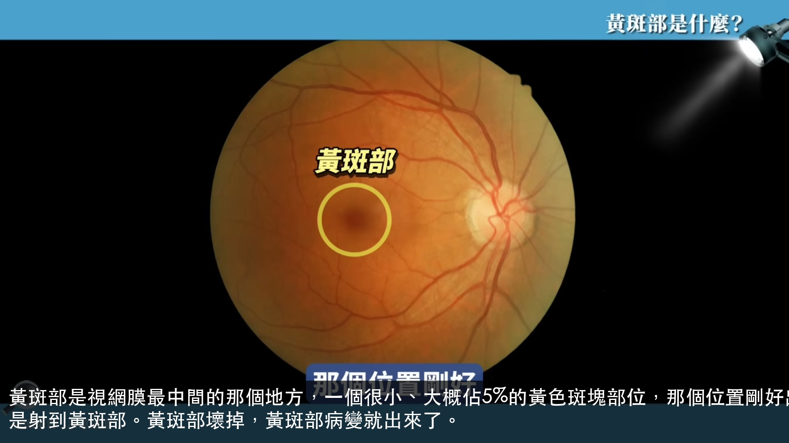
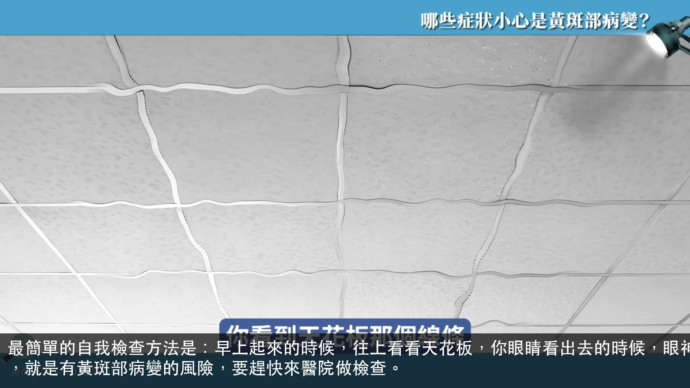
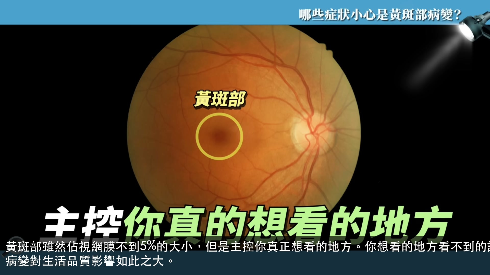

根據健保署的研究統計，在民國112年，全台灣有720萬人有眼科疾病，每3位就有1位有視力的問題，視力問題現在已經變成顯學。

黃斑部是視網膜最中間的那個地方，一個很小、大概佔5%的黃色斑塊部位，那個位置剛好出去的時候是正對瞳孔，所以瞳孔的光線進到眼睛裡面，到視網膜的時候都是射到黃斑部。黃斑部壞掉，黃斑部病變就出來了。
如果說黃斑部的細胞有病變的時候，它的細胞排列就不整齊了，一不整齊，看東西就歪掉了，所以世界會開始傾斜扭曲。這是黃斑部病變早期最典型的症狀之一。

最簡單的自我檢查方法是：早上起來的時候，往上看看天花板，你眼睛看出去的時候，眼神中間一定是黃斑部的位置，你看到天花板那個線條有沒有歪斜，有歪的時候，就是有黃斑部病變的風險，要趕快來醫院做檢查。
除了看影像會歪斜扭曲之外，世界變黯淡也是黃斑部病變的症狀。因為黃斑部細胞會主控色感，所以眼睛也會暗，視野亮度下降是需要警覺的信號。
正中間如果真的開始有比較嚴重病變的時候，病人的主述就是「想看什麼看不到什麼」。你想看的地方就是黃斑部在看，如果那裡有出血、有水腫，那一塊看不到的時候，你大腦想看的那個區塊就看不到了，所以你看模糊、扭曲、顏色變黯淡。

黃斑部雖然佔視網膜不到5%的大小，但是主控你真正想看的地方。你想看的地方看不到的話，你旁邊的背景視力對你想看的東西是沒有幫助的。這就是為什麼黃斑部病變對生活品質影響如此之大。
以前黃斑部病變我們是講說60歲以上才會得，但現在臨床上很多30、40歲的人也有，尤其是高度近視的人，例如說800度以上近視的人，人可能只有30歲，可是他的眼睛相當於90歲，黃斑部確實有年輕化的趨勢。
800度以上的高度近視，人可能30歲，但眼睛相當於90歲。眼睛這麼老，黃斑部就容易破掉、出血、水腫，中間視野就會看不到。高度近視是黃斑部病變年輕化最主要的原因之一。
黃斑部病變第一種是老年性黃斑部病變，年紀越大比例越高。很多人講說年紀大眼睛看不清楚是很正常的，其實這不是正常的，視力退化是疾病的訊號，應該就醫檢查，不能忽視。
糖尿病是國人疾病的大宗，也會影響到眼睛。糖尿病影響到眼睛的話，眼睛會變成白內障、青光眼，甚至嚴重的就會造成黃斑部的水腫，這是糖尿病造成失明最嚴重的原因之一。
這是一個迷思：有病人以為把血糖控制好，糖尿病造成的眼睛水腫就會消失。大家不要以為糖尿病治療好了，你的眼睛水腫就沒有了，不是的，還是要到醫院求診做治療，就好像糖尿病造成洗腎，治好糖尿病也不代表不用洗腎了。
如果是濕性黃斑部病變，最主要的治療方式是眼內藥物注射——從眼白的旁邊注射進去。因為美國跟歐洲一直在做藥物研發，現在有很多種藥物選擇。病患要跟醫師討論再決定用哪個藥物，這些藥物原則上現在都有健保給付。
做完眼睛注射後，打針最怕的是感染。洗澡、洗臉、洗頭會弄濕就可能造成發炎，通常打完針之後一個禮拜不能讓打針那側的眼睛碰到水，洗澡時要摀著打針那側，是很重要的術後照護。
有個病人因為打麻將時發現某些字看不到，覺得異常，趕快到醫院來看。因為他來得早，臨床上這個病人視力從0.3後來進步到1.0。所以如果真的覺得視覺有異常的時候，一定要求診於專業醫師。